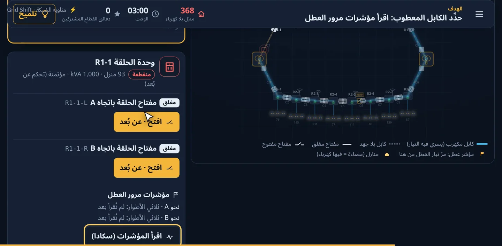
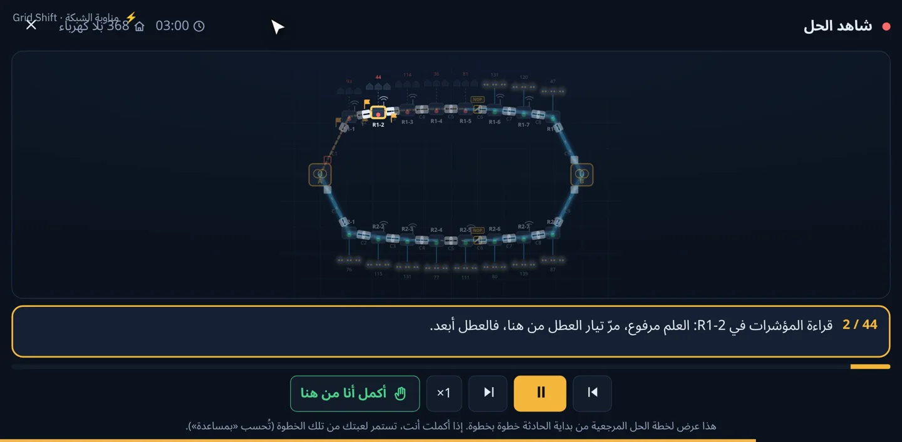

ما هي اللعبة، ولماذا هي مفيدة، وكيف تلعبها
الشبكة الحقيقية… باللعب
اللعبة مبنية على مواصفات ومراجع منشورة (حسابات قصر الدائرة IEC 60909، ومنحنيات الحماية IEC 60255 وIEEE)، وكل تبسيط مكتوب داخل اللعبة في «ملاحظات النموذج».
الشبكات الحلقية
حلقة بين محطتي تحويل، مقسومة بنقطة فتح طبيعية (NOP)، فكل نصف يتغذّى من محطة.
مؤشرات مرور العطل
ترفع علمًا إذا مرّ بها تيار العطل؛ العطل بين آخر علم مرفوع وأول علم منخفض.
العزل وإعادة التغذية
افتح طرفي الكابل المعطوب، ثم أعِد إغلاق القاطع، وغذِّ الباقي من المحطة الأخرى، ولا تربط المحطتين أبدًا.
السلامة قبل الإصلاح
قفل وبطاقة، اختبار انعدام الجهد، تأريض الطرفين، ثم تصريح العمل. اللعبة تعلّم الممارسة الآمنة فقط.
تنسيق الحماية
اضبط مرحّلات التيار الزائد حتى يفصل الأقرب إلى العطل أولًا، مع منحنيات حقيقية.
لمن هي؟
طلاب الهندسة، والمهندسون الجدد، وكل من يسأل: كيف تعود الكهرباء بعد انقطاعها؟
لن تضيع: اللعبة ترشدك



- ابدأ الدرس الأولاضغط «العب الآن» ثم «ابدأ: الدرس 1». ثلاث دقائق تعيد فيها الكهرباء إلى 265 منزلًا.
- تابع الدروس 2 إلى 4تتعلّم إرسال الفرق، والتأريض، وتصاريح العمل، والعودة إلى الوضع الطبيعي.
- العب تحدّي اليومعطل جديد كل يوم بشرط مختلف، والنجوم تقارن نتيجتك بخطة مرجعية.
أسئلة شائعة
هل أحتاج خبرة في الكهرباء؟
لا. الدرس الأول يشرح كل خطوة في وقتها، والتلميحات متاحة في كل مناوبة.
هل هي مجانية؟
نعم، بالكامل: بلا تسجيل وبلا إعلانات، وتعمل في المتصفح على الجوال والكمبيوتر.
هل هي قواعد تشغيل شركة الكهرباء؟
لا. منطق التحويل في اللعبة تسلسل آمن عام مبني على مراجع منشورة، وليس قواعد تشغيل أي شركة، ولا تفويضًا، ولا بديلًا عن التدريب.
ماذا تعني «دقائق انقطاع المشتركين»؟
عدد المنازل المنقطعة مضروبًا في مدة الانقطاع. هي نتيجتك: كلما قلّت كان أداؤك أفضل.
هل يؤثر التلميح على تقييمي؟
«أين تنظر» و«لماذا» مجانيان. «الخطوة بالضبط» تجعل أعلى تقييم نجمتين، ومشاهدة الحل نجمة واحدة.
التعليق الصوتي في الفيديو مولّد آليًا بصوت عربي اصطناعي. الفيديو يعرض اللعبة الحقيقية.